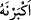
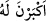

Senin yanında çok îtibarsızım
Bu hor ve hakir görmeyi ve îtibarsızlığı sürdürme
Mısır’ın kadınları yanında beni mahcub etme.”
Züleyhâ kerem ile Yûsuf ’a böyle pek çok efsunlar eyledi
Yûsuf ’un gönlü dışarı çıkmaya yumuşadı
Süslenmek için Yûsuf rüzgar gibi kalktı
Servi gibi onu yeşil elbiselerle süsledi
Amberli saçlarını aşağı salıverdi
Elbisesinin önüne yaş amber gibi giysilerini döktü
Yûsuf ’un kıl gibi ince olan beline
Ziynet olsun diye altın kemeri bağladı
Başına mücevherlerle süslü tâcı koydu
Her cevherden onun bin lütfu zâhir olurdu
Ayağına yakut ve cevherlerle dolu ayakkabılar giydirdi
O ayakkabıların tasmaları üzerine inci işlenmişti
Yûsuf da karşılarına çıkıp göründü. “Kadınlar onu görünce:”
Halvethâneden o saklı hazîne,
Açılmış gül gibi dışarı çıktı.
“Büyüklüğünü anladılar” Gözlerinde onu büyüttüler, onu yücelttiler ve üstün
güzelliği ve eşsiz cemâli karşısında donup kaldılar. Çünkü onun güzelliği, dolunayda
ayın diğer yıldızlardan üstün olması gibi her güzelin güzelliğinden daha üstündü. Bu
konuda daha fazla açıklama gelecektir. Ya da Yûsuf’u görünce şiddetli arzudan dolayı
hayız gördüler. Bu mânâ “
” ifadesinde hazfedilmiş “
” bir “lâm” olduğu
düşünüldüğünde geçerlidir.
Ya da bu ifade, el-Kevâşî’de geçtiği üzere ‘aşırı şehvetlerinden dolayı
menileri/kadınlık suyu geldi’ demek de olabilir.
eş-Şir‘a’da şöyle denilir: Bir zevcede Hz. Ali’nin söylediği şu huyların bulunması
güzel olur: “Kadınlarınızın en hayırlısı iffetli, istekli ve eşine itâatkâr olandır.”
Şaşkınlıklarından “ellerini kestiler” içine düştükleri aşırı dehşetten ve organlarının
ihtiyârî ve normal hareket etmemesi yüzünden ne yaptıklarını bilemez bir halde
bıçaklarıyla ellerini yaraladılar. Nitekim et-Tibyân’da böyle denilmektedir.
Vehb der ki: “Bu kadınlardan bir kısmı ölmüştür.” Nitekim Molla Câmî şöyle der:
Kadınlardan her birisi o cemâli görünce
Kendi turunçlarını kesmeyi temenni ettiler
Turunçlarının ellerinden düştüğünü bilmediler
Kendi ellerini kesmeye başladılar
Birisi kalem yontar gibi parmaklarını kesti
Kalemi kesti, vefâ harfini gönlüne yazdı